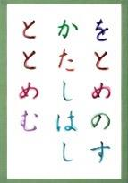
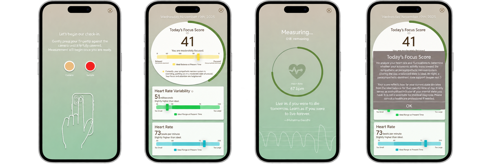

↗
↗ ↗
↗Kwansei Gakuin University
Student Researcher · Prof. Nagata’s LabIndependent research on acquired synesthesia and Competitive Karuta, bringing spatial statistics to questions about cultural expertise and perception.
MOMO KIHARA / COGNITIVE SCIENCE & SPECULATIVE DESIGN
Cognitive Science Researcher · Product Manager · UX Designer
BASED IN LA JOLLA, CALIFORNIA, USA
How can experience and learning shape internal representations?
WHERE I’VE WORKED
Industry, research, education, and community experience.
CHAPTER 01 / ABOUT ME
I’m Momo Kihara, a cognitive science researcher at UC San Diego working at the intersection of human behavior, technology, and business.
My interest in Imagineering connects my curiosity about the mind with a love for immersive experiences. Through these interests, I keep returning to one question: how can understanding our minds help create more immersive experiences?
My research began with a question about competitive karuta: how might learning and cultural expertise influence the colors people associate with language? Studying these patterns has led me from color responses and spatial statistics toward predictive models of perception.
Alongside research, I’ve worked on customer journeys, business proposals, digital prototypes, and editorial illustration. These experiences shape how I approach design: understand the people involved, make an idea tangible, and communicate it clearly.
Looking ahead, I want to explore how biological decision-making and narrative personality can inform believable animated and robotic characters. I’m especially drawn to experiences that invite curiosity and make people feel part of a story.
SKILLS
Python · R · MATLAB · SQL · BigQuery · Spatial statistics · Geospatial analysis
Figma · UI/UX · Prototyping · Git · Google Apps Script · Photoshop
LANGUAGES
JapaneseNative
EnglishIELTS 8.0
KoreanTOPIK 5
SpanishElementary
Independent research on acquired synesthesia and Competitive Karuta, bringing spatial statistics to questions about cultural expertise and perception.
Extending synesthesia research toward computational predictive models of color perception with Dr. Takeru Matsuda. Expected through March 2028.
Helping undergraduate scholarship reach readers through illustration, editorial collaboration, and publication production.
Customer journeys, acquisition proposals, and digital prototypes connect audience needs with clearer decisions.
Customer discovery, market sizing, pricing, financial modeling, and high-fidelity product prototypes.
Collaborating on Paceful, a concept for sustainable productivity that integrates reflection and wellness with study management.
CHAPTER 02 / RESEARCH INTERESTS
I study the relationship between learned experience, internal representations, and observable behavior.
TOPICS OF INTEREST
My work encompasses internal representations, cultural insights, computational cognitive science, and machine learning for perceptual prediction.
I’m interested in computational narrative cognition: how characters’ beliefs and goals influence decision-making and how those decisions can override biological objectives.
Download Full Academic CV ↗M. Kihara, D. Hamada & N. Nagata · International Symposium on Affective Science and Engineering
Read publication ↗M. Kihara, D. Hamada & N. Nagata · Manuscript in preparation for submission to Consciousness and Cognition.
Student researcher since July 2026 in the Statistical Mathematics Unit, advised by Dr. Takeru Matsuda. Exploring hierarchical and distributional models of synesthetic color perception.
CHAPTER 03 / FEATURED PROJECTS
Research gives me a way to understand people. Design gives me a way to put that understanding to work.

01 / COGNITIVE RESEARCH · 2021–PRESENT
Investigating synesthetic color associations in Competitive Karuta, a Japanese poetry card game, through spatial statistics and perceptual modeling.
My Responsibility: Student researcher in Prof. Noriko Nagata’s lab, advised by Dr. Daisuke Hamada. I conducted independent research, analyzed 1,800 synesthetic color samples, and authored academic papers.
Research Method: Studied how phonological, orthographic, semantic, and poetic features relate to color perception using CIE L*a*b* color-space statistics.
Next Step: Develop cross-corpus predictive models with poem-level validation and newly collected Man’yōshū responses.
Read the published paper ↗02 / PRODUCT MANAGEMENT · SUMMER 2026
Connecting customer discovery, market analysis, pricing, and product design in a three-person product-management team at Recruit Holdings Co., Ltd.
My Contribution: Built a TAM–SAM–SOM model and three-year P&L, analyzed 138K+ business locations with SQL and BigQuery, and informed pricing with seven research studies and restaurant-owner interviews.
Designed high-fidelity Figma prototypes and proposed integrations connecting payment, reservations, and queue management.
Tools: SQL · BigQuery · Figma · Financial modeling
03 / COMMUNICATIONS · SUMMER 2026
Persona research, journey mapping, social media marketing, and digital prototypes for consumer growth proposals at SoftBank Corp.
My Contributions: Co-developed proposals for Y!mobile and SoftBank Hikari/Air, using landing-page analysis to identify decision friction. Built two web applications in Google Apps Script, including a responsive prototype and a decision-support dashboard. Delivered 13 campaign and strategy outputs across five stakeholder presentations.
Tools: Journey mapping · Google Apps Script · Prototyping

04 / UI & UX · 2025–2026
A four-person team’s mobile app concept combining study management, emotional reflection, wellness prompts, and physiological feedback through UC San Diego’s Cognitive Science Student Association.
My role: Software Engineer & UI Designer.
Contributed to UI/UX design and prototyping in Figma and Figma Make. The team explored PPG-based sensing as a potential way to estimate stress and concentration, and was selected for CSSA’s official showcase.
Tools: Figma · UI/UX design · Cross-functional collaboration
THE PROTOTYPE PREVIEWS
A mobile app concept that brings study management, emotional reflection, and physiological feedback into one experience.
The measurement-screen prototype visualizes progress and illustrates real-time heart-rate feedback.
The dashboard prototype explores how to present a focus score, heart-rate variability, and heart-rate feedback in one view.
An explanation panel helps users interpret the focus score.
Interested in research, experience design, or creative collaboration? I’d love to connect.
Say Hello ↗mkihara@ucsd.edu